Half Life es un videojuego de tipo shooter en primera persona y ciencia ficción estrenado en el año 1998 por Valve Corporation, y distribuido por Sierra Entertainment. Este juego marcó un antes y un después en el mundo de los videojuegos por su divertida jugabilidad, sus gráficas innovadoras para la época, y su historia que, no solo se mantiene misteriosa y llamativa hasta el día de hoy, si no que le permite al jugador sentirse parte del mundo, mantenerse en control del personaje todo el tiempo mientras se vive una historia única sin interrupciones de cinemáticas.
Half Life
Su historia
La historia de Half Life se centra alrededor de Gordon Freeman, un cientifico de las instalaciones de Black Mesa ubicadas en el desierto de Nuevo Mexico, durante un día de trabajo normal en el que, una prueba que involucra un cristal de origen alienígena provoca una "Cascada de Resonancia", causando que portales de este mundo fronterizo llamado "Xen" comienzen a aparecen alrededor de las instalaciones e iniciando así una invasión de todo tipo de criaturas extraterrestres desconocidas en Black Mesa. Gordon va a tener que detener esta catástrofe a toda costa, defendiendo a sus colegas científicos, abriendo fuego contra hordas de alienígenas agresivos, derrotando soldados del ejército que fueron enviados a las instalaciones para limpiar el desastre y por consecuencia, matar a todo el personal, e incluso viajando al mundo de origen de las criaturas para terminar con la invasión de una vez por todas.
A donde sea que vayas en tu largo recorrido por Black Mesa, siempre vas a estar acompañado por tres cosas: Tu palanca de metal, tu traje de protección HEV (Hazardous Enviroments Vehicle Suit) y algún ocasional extraterrestre listo para comerte. A lo largo de tu aventura también te vas a encontrar con compañeros de trabajo que te van a poder ayudar en el transcurso tu viaje; los científicos te curan si tu salud es muy baja, y los guardias de seguridad te van a acompañar si así lo deseas, y atacar a los enemigos que vean junto a vos.
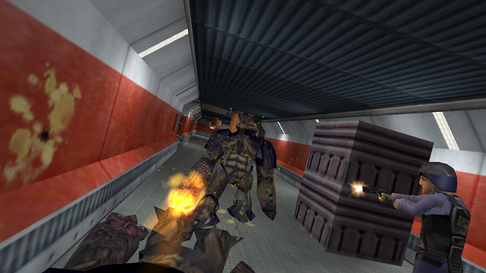
¿Qué puedo encontrar en Half Life?
Un mundo inmersivo e interactivo
Una de las cosas por las cuales más destacó Half Life en su salida fue por la interactividad de su mundo y escenarios. Botones con los que abrir puertas, máquinas expendedoras que sueltan bebidas al interactuar, cajas que podes arrastrar por el piso, personajes hablando uno con el otro incluso en secuencias no cinemáticas, y más cosas que los juegos de disparos de la época no se atrevían a hacer. Ejemplos que vienen a la mente serían el mítico DOOM o inlcuso Quake (Este último siendo la mayor inspiración de Half Life), los cuales directamente te mandan al campo de batalla a pelear contra demonios y otros tipos de enemigos. En cambio Half Life se toma el tiempo de construir una historia y un mundo que deja al jugador inmerso en la experiencia y con ganas de explorar todo.
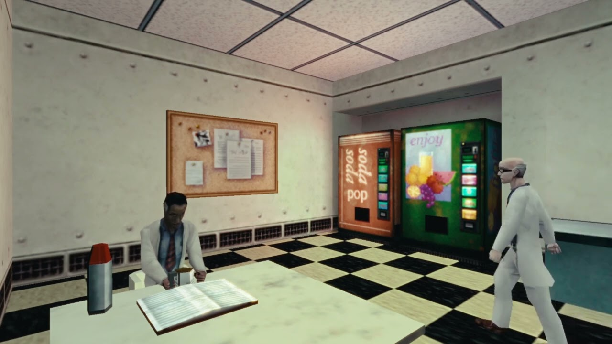
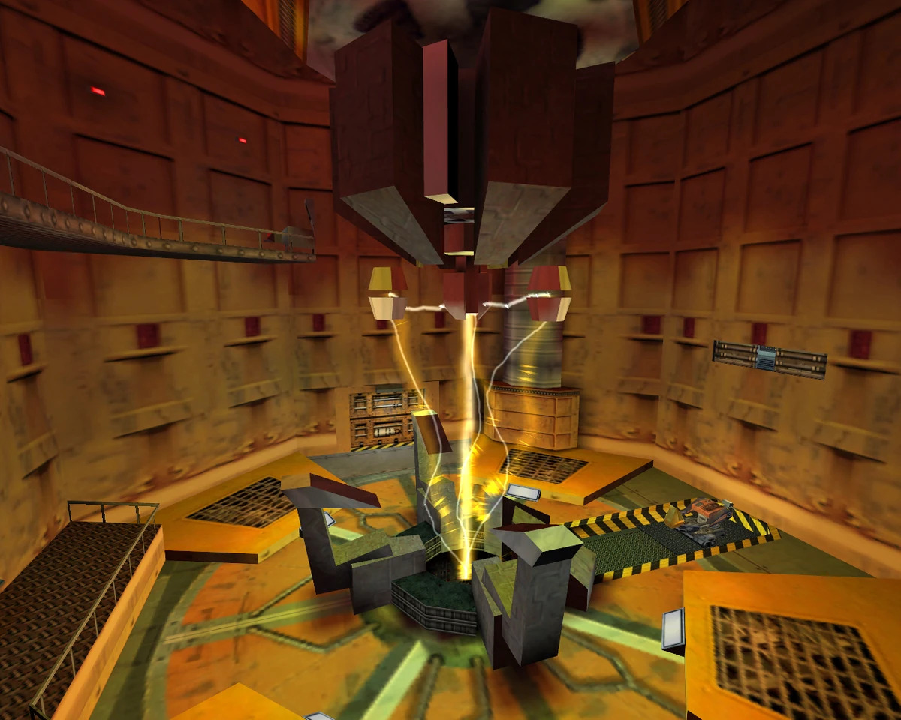
Enemigos de todos los colores
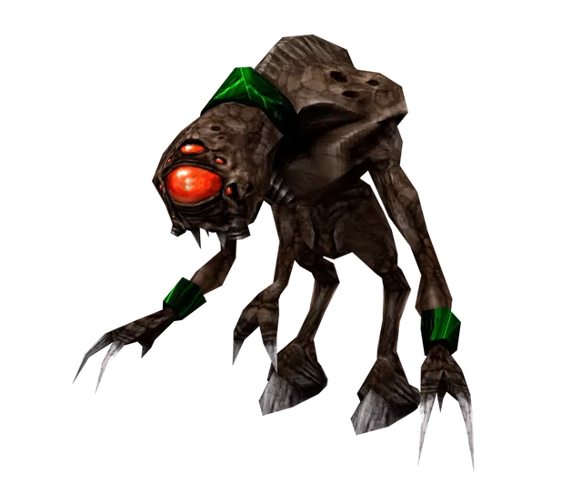
Durante tu estadía en Black Mesa no solo vas a encontrate con amigables científicos y confiables guardias de seguridad, si no también con un buen par de alienigenas detestables que van a hacer todo lo posible para matarte. Por ejemplo el Headcrab, el enemigo más icónico del juego, es un parásito chiquito que va a intentar saltar hacia la cabeza de su presa para adherirse a ella al más estilo Alien, y transformarla en un zombie viviente; de ahi el nombre. Otro buen ejemplo serían los Vortigaunts: unos esclavos de su planeta de origen que, bajo control mental, van a lanzarte desde las distancias rayos lásers que pueden crear con sus propias manos. No querés toparte a un grupo de estos tipos enojados.
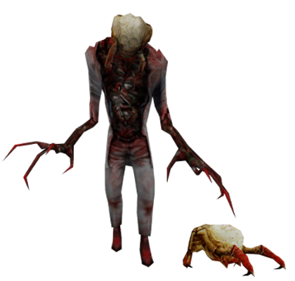¿No tuviste suficiente?
El ejército de los Estados Unidos también esta acá, y no quiere que ningún hombre ni alienígena salga vivo de las instalaciones con tal de terminar con la invasión y no dejar ni un solo testigo. ¡Demostráles que estás hecho de acero acabándo con un par de ellos!
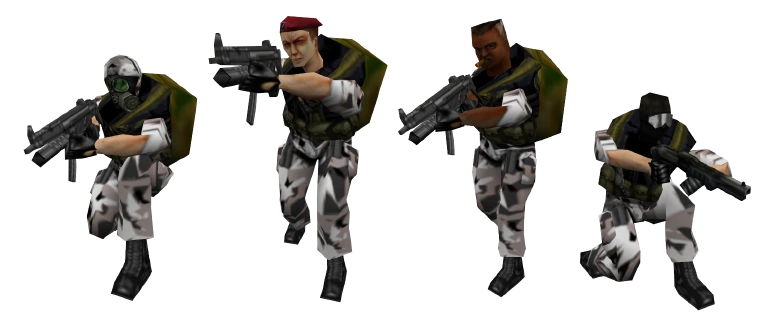Armas, armas y más armas
Contra enemigos fuertes, vas a necesitar armas más fuertes. Desde una Glock común y corriente, una MP5 de combate militar, hasta incluso el Tau Cannon, un arma hecha a base de un acelerador de partículas: este juego contiene un arsenal extremadamente variado a pesar de sus limitaciones, logrando que cada arma que encuentres en tu recorrido por Black Mesa se sienta única y divertida de utilizar a su manera.
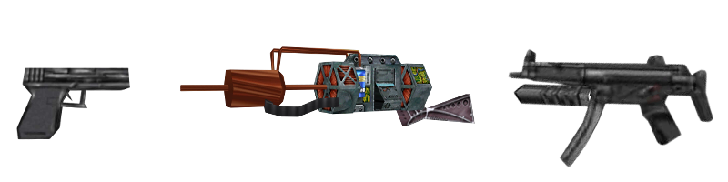
Multijugador y cáos por doquier
Si te quedaste con ganas de más, el modo Deathmatch multijugador es la solución. El objetivo es simple: Todos contra todos, el que más jugadores mate es el ganador de la partida. Este modo de juego incluye mapas exclusivos, selección de personajes, las mismas armas del modo campaña para que encuentres y uses en contra de tus adversarios, y un sin fín de caós absoluto y diversión sin límites. Todo esto sumado a los mapas y modos de juego creados por la comunidad, que sumado a la insaciable sed de cada jugador por ser el rey del campo de batalla, hace del modo Deathmatch una experiencia a la que siempre vas a querer volver. Basta con unirse a un servidor público desde el menú principal para comenzar.
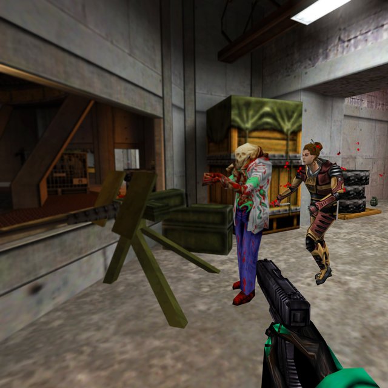
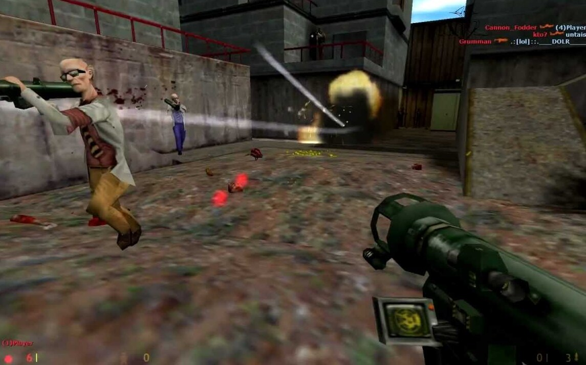
El impacto de Half Life en los videojuegos
Hay dos formas distintas de ver el grandísimo impacto que tuvo Half Life en la historia de los videojuegos: El impacto en juegos Singleplayer y Multiplayer. A continuación vamos a explicar con detalle cada una:
Impacto en juegos Singleplayer
Con la salida de Half Life, tanto los jugadores cómo los desarrolladores de videojuegos en general se dieron cuenta de una cosa: crear historias utilizando videojuegos cómo medio era divertido, o podía serlo si se hacia correctamente. No solo eso: crear mundos inmersivos, objetos interactuables, y estéticas variadas eran herramientas muy útiles para hacer que el jugador se interesara más en explorar y seguir jugando. Uno de los ejemplos más recientes que se nos ocurren sería DOOM: Eternal. Este juego, siendo actualmente la última entrega de la saga DOOM, tiene un enfoque mucho mas centralizado en su historia, construcción del mundo e interacción con el mismo, mientras que aún conserva esa jugabilidad violenta y dinámica que tanto caracterizaba a su primera entrega de 1993 y que, junto a Quake, también inspiró la creación de Half Life. Podríamos decir que DOOM: Eternal cerró el ciclo de inspiración que tanto habia empezado con sus primera entregas.
Impacto en juegos Multiplayer
Un juego cómo Half Life cuyo modo multijugador fue tán popular en algún momento iba a tener una comunidad motivada a seguir creando en base al mismo. De esta manera fue como nacieron ciertos mods que en su momento fueron tan populares que la mismísima Valve contrató a sus creadores para hacerlos juegos oficiales y lanzarlos bajo el mismo motor de Half Life. Así nacieron joyas cómo Counter Strike 1.6 y Team Fortress Classic, los cuáles no hicieron más que seguir demostrándole al mundo lo divertido que pueden ser los juegos de disparos si pones a un par de jugadores armados en un solo mapa a matarse entre sí. Fue este efecto dominó que ayudo a crear de cierta manera la forma en la que los shooters manejan su jugabilidad y modos de juego, incluso en la actualidad. Sin Half Life, no tendríamos juegos como Overwatch, Valorant, e incluso Team Fortress 2, creado por la mísma Valve.
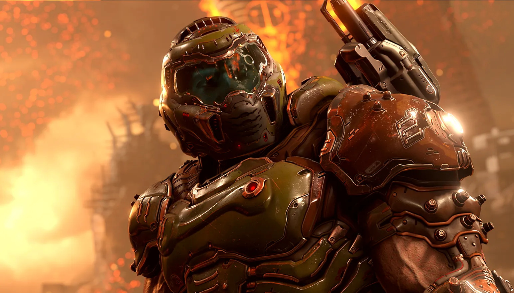
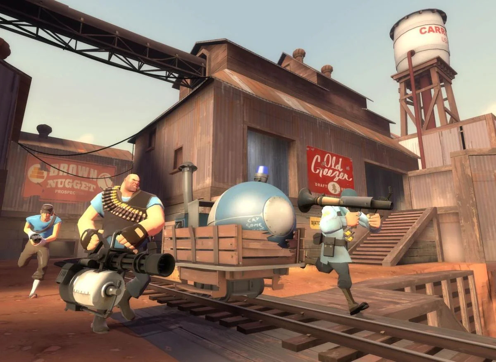
Más juegos de la Saga
¿Que pasa? Te gustó un montón Half Life, pero ya te aburriste de su modo campaña E INCLUSO multijugador? ¿Te quedaste con ganas de saber más de su historia? ¿Querés saber qué más hizo la comunidad motivada por su cariño a este juego? No digas más, que ahora te vamos a mostrar otros juegos de la serie para no perder el interés:
- DLCs de Half Life:
- Half Life 2:
- Half Life Alyx:
- Black Mesa:
¡Momento! ¿Half Life tiene DLCs? Si, y por lo menos dos de tres están en Steam también. Creados por Gearbox Studios, primero tenemos Half Life: Opposing Force, el cual te permite jugar cómo uno de los soldados del ejército llegando a Black Mesa, Adrian Shephard. Este DLC incluye nuevas armas, nueva variedad de enemigos, y una nueva raza alienígena que hace debut en esta entrega: La Raza X.
Luego tenemos Half Life: Blue Shift. En este DLC vas a jugár como Barney Calhoun, un guardia de seguridad y amigo de Gordon Freeman, intentando escapar de las instalaciones junto a sus compañeros. Esta expansión es más corta que la anterior y no ofrece nueva variedad de armas ni enemigos, pero es interesante tener una nueva perspectiva de los eventos desastrosos de la cascada de resonancia y la invasión de Xen en los laboratorios de Black Mesa.
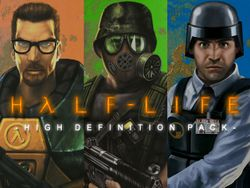
La secuela directa del primer juego. Después de los acontecimientos del final de Half Life, Gordon es puesto en un estado de "hibernación" y despierta 20 años después en lo que parece ser una ciudad que se quedó en el tiempo: Una nueva raza alienígena superior a cualquier otra que se hacen llamar la "Alianza" fueron alertados por la cascada de resonancia del primer juego y deciden invadir la Tierra, y conquistando todas las ciudades del planeta y trasformándolas en campos de concentración masivos en las que una Resistencia, conformada por ciertos ex compañeros de trabajo de Black Mesa, intentarán a toda costa detenerlos y recuperar la libertad. Ahora con Gordon de vuelta (quien en su ausencia fue considerado una leyenda), es hora de volver a equiparse con su traje de protección HEV y su fiable palanca metálica en esta aventura de 2004 que sirvio como el debut principal del motor Source, el nuevo motor gráfico creado por Valve.
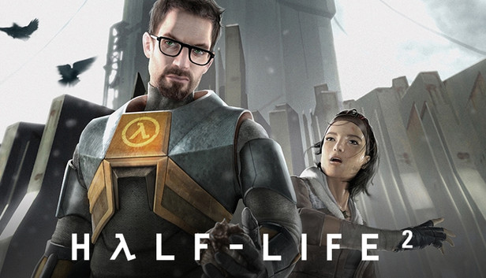
En el salto de la saga Half Life a la realidad virtual, te pones en la piel de Alyx Vance, una de los personajes principales de Half Life 2 en este juego que funciona como precuela del mismo. Alyx debe rescatar a su padre, Eli Vance, quien fué capturado por la ALianza y va a ser interrogado para después ser ejecutado, con cierta ayuda de sus compañeros de la Resistencia y un Vortigaunt amigable, y enfrentándose a criaturas de Xen nunca antes vistas en la saga. Es el ultimo título de Half Life hasta la fecha, y lleva hasta el límite (Por lo menos de parte de Valve) el motor Source con unos gráficos excelentes, modelos de alta resolucioón y, como siempre, un estilo visual de lo más llamativo.

Half Life 2 no fue el primer juego del motor Source en ser creado: Originalmente existió una 'remasterización' de Half Life llamada Half Life: Source, que era exactamente el mismo juego pero con ciertos cambios gráficos y jugables que lo 'ayudaban' a adaptarse a este nuevo motor gráfico. Quizás fue por eso o por la inmensa cantidad de bugs que acabó siendo tan odiado por la comunidad y el público en sí. Pero algo bueno salió de esto, y es que un grupo de fans, motivados a hacer algo mejor, decidió recrear TODO el primer Half Life en este nuevo motor gráfico, prácticamente desde cero.
Así nace Black Mesa, un remake de Half Life que decide llevar al límite absolutamente todo lo visto anteriormente: Gráficos de altísima calidad, zonas del juego completamente remodeladas, y nuevas mecánicas que se asemejan a las vistas en Half Life 2, este juego es basicamente magnífico, siendo LA carta de amor que el Half Life original tanto necesitaba. ¡Incluso recibió autorización de Valve para ser lanzado en Steam! ¡Nunca subestimen la pasión de los fans!